요즘 쓰는 모델 세 가지
코난쌤의 순위는 분명해요. Opus 5.5가 부동의 1위라 매일 쓰고, ChatGPT는 요즘 거의 열지 않아요. 영상은 세 모델을 차례로 평가하는데, 기준은 결국 '얼마나 알아서 잘하나'와 '한도가 얼마나 버티나' 두 가지예요.
Astra: 시키는 일은 하지만 알아서는 못 해요
아래 슬라이드 맨 위 사용량 막대는 왼쪽 끝에 빨간 조각만 남아 있어요. 몇 번 쓰면 금방 바닥난다는 뜻이에요. 아래 세 칸은 평가표예요. 말하기와 '알아서 깔끔하게'에는 X, 시키는 일에는 O가 붙어 있어요.
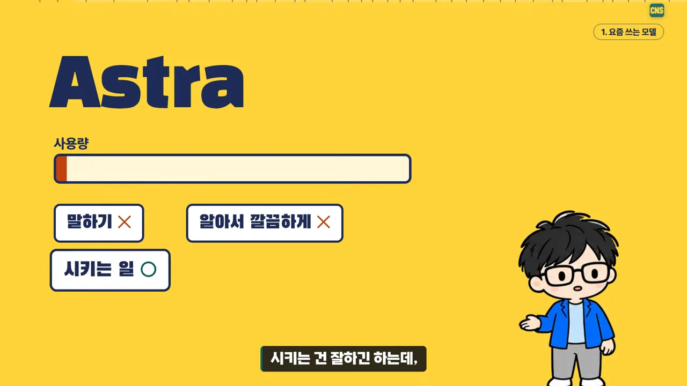
그런데도 ChatGPT를 버린 건 아니에요. 다음 슬라이드에는 월요일부터 일요일까지 요일마다 초기화 아이콘이 붙어 있어요. Tibo가 사용량을 거의 매일 리셋해 주니, 오히려 '언제든 쓸 수 있는 모델'처럼 느껴진대요. 그래서 리셋권을 모아 두고 새 모델이 나오면 그때 쓰려고 기다리는 중이에요.
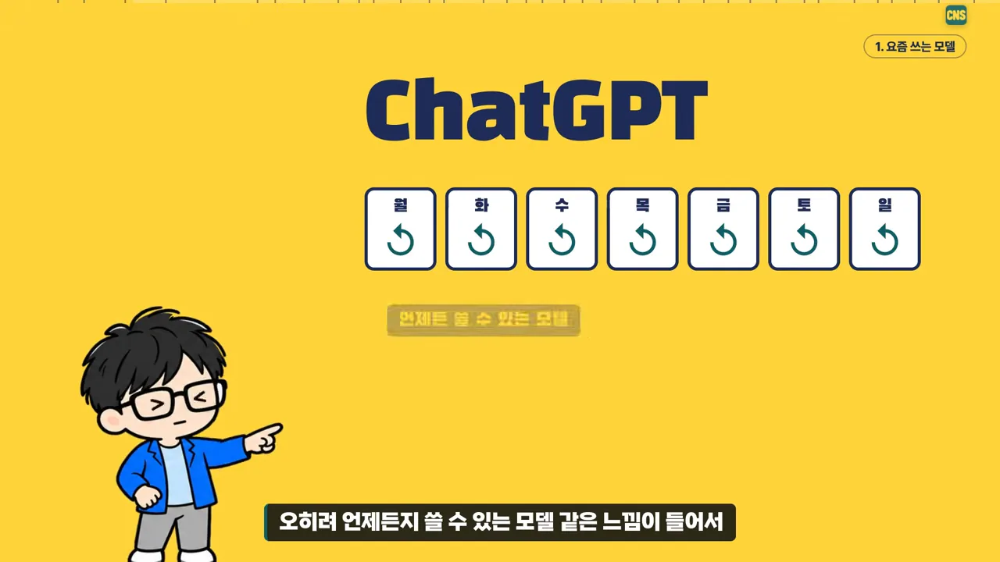
Argon: 글은 잘 쓰는데 한도가 짧아요
Argon은 대학 할인으로 한 달 7,300원에 쓰고 있어요. 장점 슬라이드에는 '글쓰기'가 크게 적혀 있고, 그 아래 입력창에 'Argon으로 윤문해 줘'가 들어 있어요. 다른 모델로 문서를 뽑은 다음, 마지막 다듬기만 Argon에 맡기는 방식이에요.
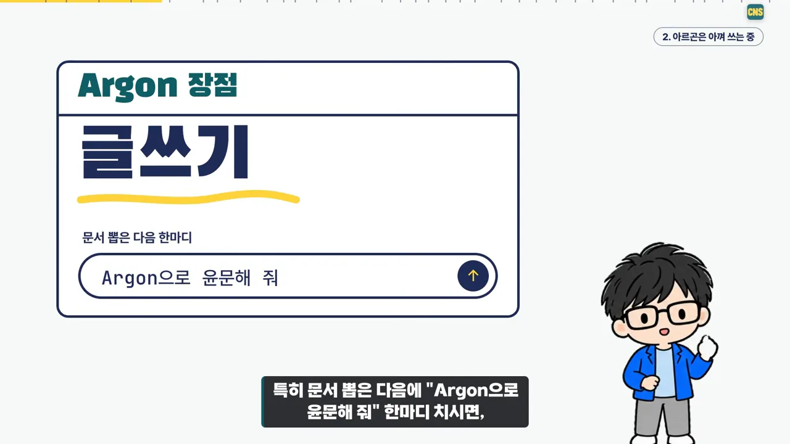
단점 슬라이드는 주간 한도를 여섯 칸으로 그렸어요. 첫 칸만 '사용'이고 나머지 다섯 칸은 전부 '대기'예요. 하루 쓰고 한도에 걸리면 닷새를 기다려야 한다는 그림이에요. API(Application Programming Interface)로도 쓰지만 비싸서 아직은 가끔만 써요.
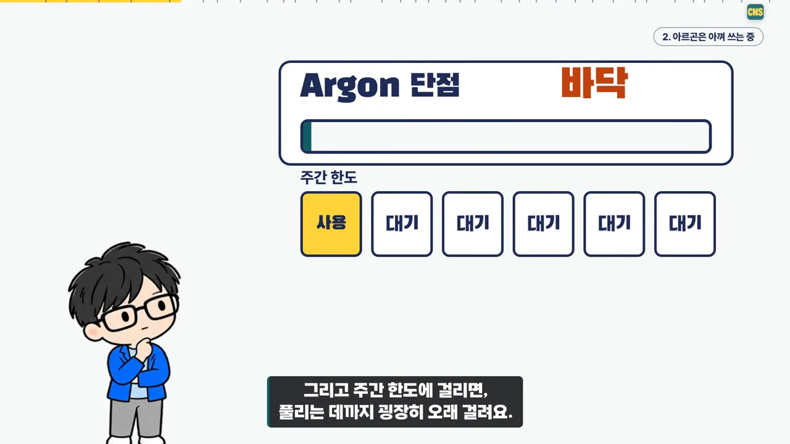
세 모델을 영상이 말한 대로만 나란히 놓으면 이래요.
| 모델 | 좋은 점 | 아쉬운 점 | 지금 쓰는 방식 |
|---|---|---|---|
| Opus 5.5 | 부동의 1위 | Max 요금제가 아니면 부족할 수 있어요 | 거의 모든 작업, medium으로 |
| Astra (ChatGPT) | 시키는 일은 해요 | 사용량이 금방 닳고, 알아서 잘하지 못해요 | 리셋권을 모아 두고 새 모델을 기다려요 |
| Argon | 글쓰기, 윤문 | 주간 한도에 걸리면 오래 기다려야 하고, API는 비싸요 | 한 달 7,300원 요금제로 아껴서 |
토큰 아끼는 법: 모델은 에이전트로, 강도는 필요할 때만
대부분의 일은 Claude에 맡기고, 모델은 Opus 5.5에 추론 강도 medium으로 둬요. 여기서부터가 토큰을 아끼는 요령이에요. 핵심은 두 가지예요. 모델은 세션이 아니라 에이전트 단위로 바꾸고, 추론 강도는 필요할 때만 올려요.
작은 모델은 새 에이전트에 맡겨요
'섞어 쓰는 요령' 슬라이드는 Opus 5.5 카드만 밝고 Sonnet 5.5·Haiku 5.5 카드는 흐리게 그려 놨어요. 처음엔 Opus 5.5 medium으로 시작하고, 일이 많아져 병렬로 돌려야 할 때만 'Sonnet이나 Haiku를 써서 작업해'라고 시킨다는 순서예요.
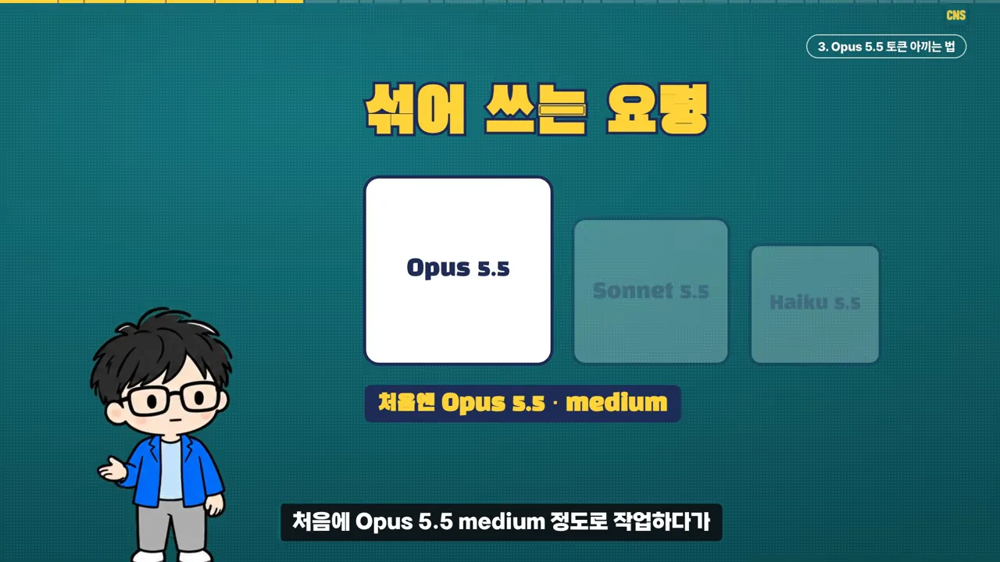
그런데 세션 모델 자체를 Haiku로 바꾸면 문제가 생겨요. 다음 슬라이드 오른쪽 캐시 칸은 번개 모양으로 갈라져 있고, '재사용 중'이 '캐시 깨짐'으로 바뀌어요. 그동안 쌓아 둔 대화를 처음부터 다시 읽게 되는 거예요.
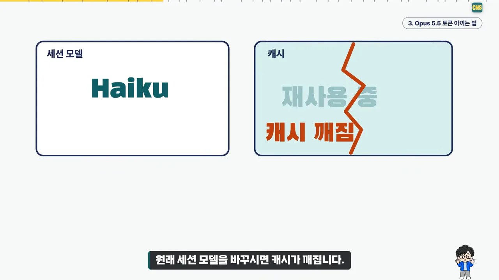
해법은 같은 세션 안에 새 에이전트를 붙이는 거예요. 슬라이드에서 메인은 그대로 Opus 5.5이고, 옆에 노란 '새 에이전트 Haiku' 칸이 하나 더 생겼어요. 아래 프롬프트 칸의 '그 에이전트는 Haiku로 작업해' 한 줄이면 돼요. 오른쪽 캐시 칸은 이번엔 갈라지지 않았어요.
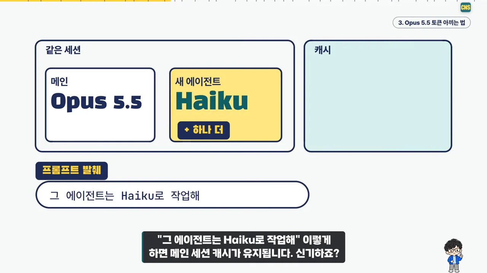
추론 강도는 어려울 때만 올려요
Claude Code를 처음부터 쓴 사람이라면 ultrathink를 알 거예요. 프롬프트에 이 단어를 치면 글자 색이 바뀌면서 그 차례만 더 깊이 생각해요. 코난쌤은 포르쉐 박스터 718 핸들의 빨간 부스트 버튼에 빗대요. 누르면 잠깐 확 빨라지는 버튼이죠. 평소엔 medium으로 두고 어려운 작업에만 한 번씩 넣으면 돼요.
근거로는 자기가 찍은 영상과 논문을 들어요. 슬라이드는 계단 세 개로 그 생각을 보여 줘요. 맨 아래 '작은 모델 · 낮은 단계' 칸 위에는 체크 표시가 다섯 개, 'effort ↑' 칸엔 두 개, 'effort ↑↑' 칸엔 빈 동그라미 하나만 있어요. 대부분은 낮은 단계에서 끝나고, 올려야 할 일은 갈수록 적다는 뜻이에요.
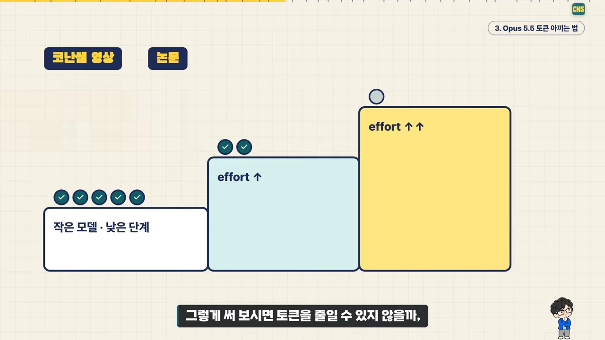
두 요령을 한 흐름으로 묶으면 이래요.
flowchart TD
A["Opus 5.5 · medium으로 시작"] --> B{"작업이 많아져
병렬이 필요한가?"}
B -- "예" --> C["새 에이전트를 만들고
'그 에이전트는 Haiku로 작업해'"]
C --> D["메인 세션 캐시 유지"]
B -- "아니요" --> E{"어려운 작업인가?"}
E -- "예" --> F["그 차례에만 ultrathink"]
E -- "아니요" --> G["medium 그대로"]
그래서 얼마나 남나요
결과 슬라이드의 '이번 주 사용량' 막대는 3분의 2쯤에서 멈춰 있고 아래에 '다 못 씀'이 크게 적혀 있어요. Opus 5.5 medium으로 써도 일주일 안에 토큰을 다 못 쓰고, 리셋권도 하나 남겨 두고 있대요. 단, Max 200달러 요금제 기준이에요. 워낙 많이 돌려서 Max가 아니면 부족할 거라고 덧붙여요.
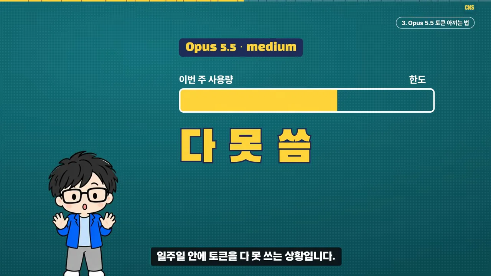
Claw Office: 에이전트 수십 개를 한 사무실에
토큰을 얼마나 쓰는지 보여 주겠다며 꺼낸 게 Claw Office예요. 코난쌤은 에이전트를 한두 개가 아니라 수십 개 돌려요. 그래서 '지금 누가 일하고, 누가 쉬고, 누가 내 도움을 기다리나'를 한 화면에서 보려고 만든 도구예요.
먼저 규모부터요. 슬라이드에는 내 컴퓨터, 노트북, 데스크톱 세 칸이 아래에서 하나로 이어져 있고, 그 연결선에 'Tailscale로 연결'이라고 적혀 있어요. 이 세 대에 흩어진 에이전트 중 몇 개는 늘 켜져 있고, 나머지는 필요할 때만 일해요.
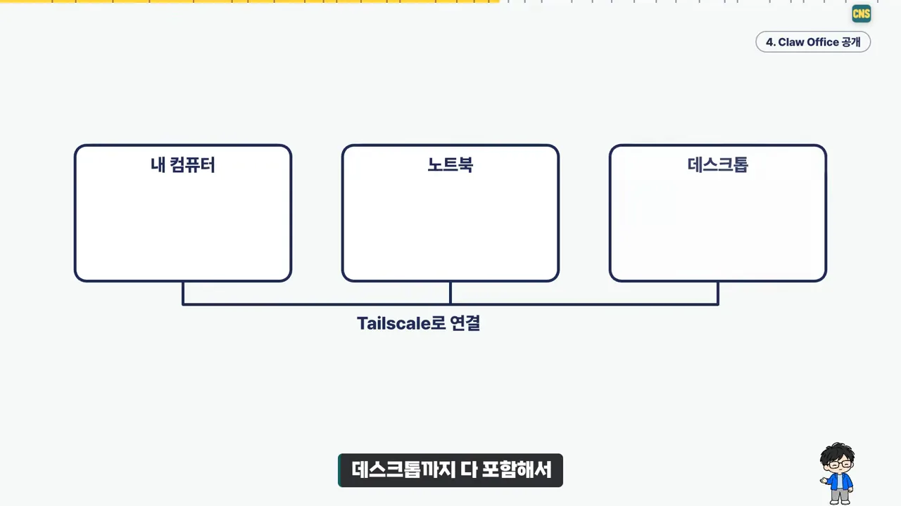
화면은 3D 사무실이에요. 에이전트 하나가 책상에 앉은 직원 하나고, 컴퓨터마다 구역이 따로 있어요. 아래 README 화면 윗줄은 'M5 6명 · M2 Max 17명'처럼 컴퓨터별 직원 수를 보여 줘요. 그 아래 두 줄이 읽는 법이에요. 머리 위 점 색은 상태(일하는 중·방금 끝남·대기·꺼짐)이고, 책상 색은 도구(OpenClaw·Claude Code·Codex 등)예요. 맨 아래 모니터에는 컴퓨터마다 CPU(Central Processing Unit)·메모리·디스크 막대가 떠 있어요.
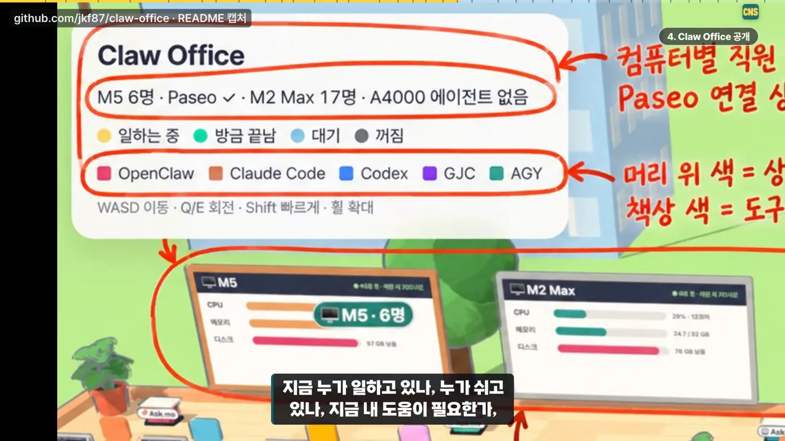
한 발 물러서면 사무실 전체가 보여요. 빨간 손글씨 메모가 기능을 짚어 줘요. 직원을 클릭하면 대화 창이 열리고, 오른쪽 아래 '일 맡기기'로 새 일을 주고, '받은함'에서 권한 요청에 답해요. 왼쪽 아래 '터미널'로는 셸과 TUI(Text-based User Interface)를 열 수 있어요.
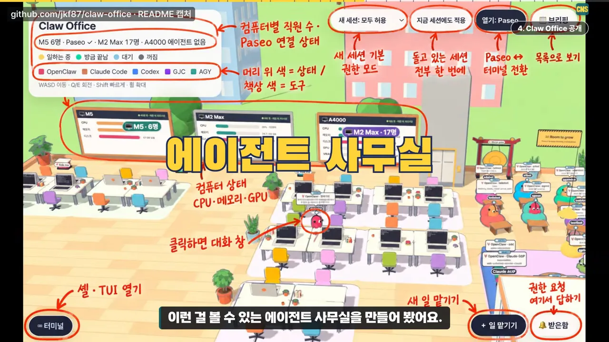
처음부터 다 만든 건 아니에요. 공개된 소스 코드를 가져와 두 가지를 고쳤어요. 원래 버전은 램을 많이 먹어서 덜 먹게 손봤고, 보기만 되던 걸 직접 제어할 수 있게 아예 새로 개조했어요.
설치는 README의 터미널 화면 그대로 따라 하면 돼요. 빨간 번호가 순서예요. ① 저장소를 받고, ② npm install, ③ ./update-plugin.sh로 한 번에 설치하고, 'Connectivity check: ok'가 나오면 성공이에요. ④ 커스텀 플러그인 UI(User Interface)를 켜고, ⑤ 사이드바에서 Claw Office를 열어요.
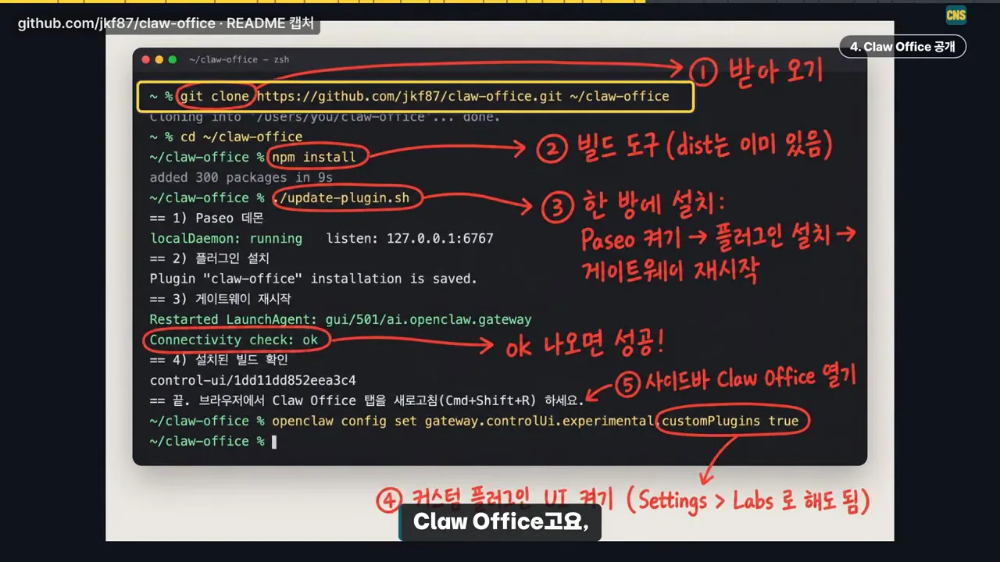
아직 잔버그가 있을 거라서, 쓰다가 안 되는 게 있으면 GitHub 이슈나 PR(Pull Request)로 알려 달라고 해요.
AI가 보안을 뒤흔드는 이유
코난쌤이 꼽은 이번 주 소식은 보안이에요. 요즘 AI 때문에 보안이 줄줄이 뚫리고 있다는 거예요.
사람은 안 하는 일을 AI는 해요
슬라이드는 세 칸으로 구조를 보여 줘요. 왼쪽 '사람이 짠 레거시 코드'가 가운데 '그 코드로 만든 도구'가 되고, 오른쪽 'AI 에이전트'가 그 도구를 써요. 아래 말풍선 '어?'는 에이전트가 쓰다가 이상한 점을 발견하는 순간이에요.
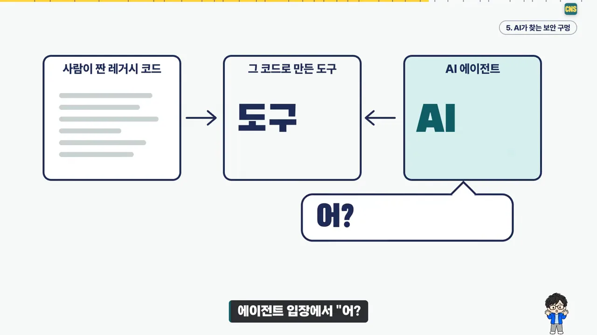
예를 들면 엄청 큰 파일을 올리는 일이에요. 사람은 안 될 걸 알아서 아예 시도하지 않아요. AI는 그냥 올려 봐요. 엄청나게 많은 호출을 보내다 취약점을 찾기도 하고요. 도구를 쓰는 방식이 사람과 달라서, 생각지도 못한 오류가 쏟아지는 거예요.
그 결과가 아래 화면이에요. 가운데 '○○2Shell'이 크게 박혀 있고, 배경 곳곳에 같은 이름이 흩어져 있어요. 이런 이름의 취약점이 우후죽순 터지고 있다는 뜻이에요. 영상은 구체적인 이름 대신 ○○으로 가려서 말해요.
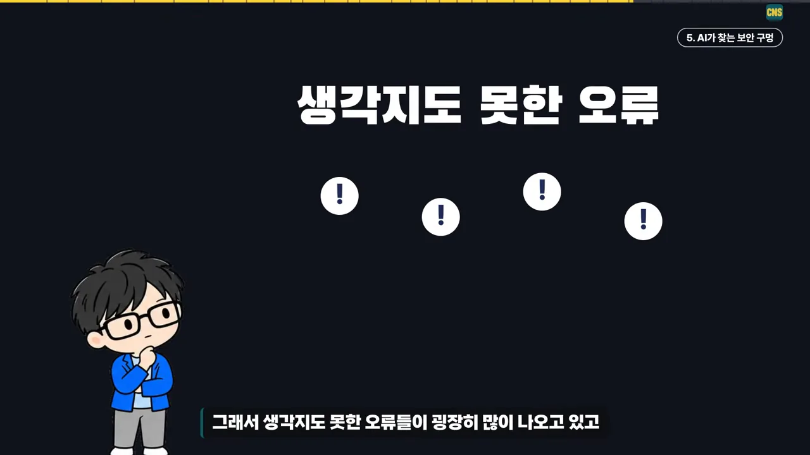
특이점의 전조일까요
코난쌤은 여기서 한 걸음 더 나가요. 슬라이드 위쪽은 '사람이 쓴 코드 → 취약점 찾기 → 패치'가 흐리게 남아 있고, 아래에는 'AI가'라는 라벨과 함께 '짜기 → 찾기 → 패치' 삼각형이 '반복'으로 돌아요. 사람이 하던 순서를 AI가 넘겨받아 스스로 돌린다는 그림이에요.
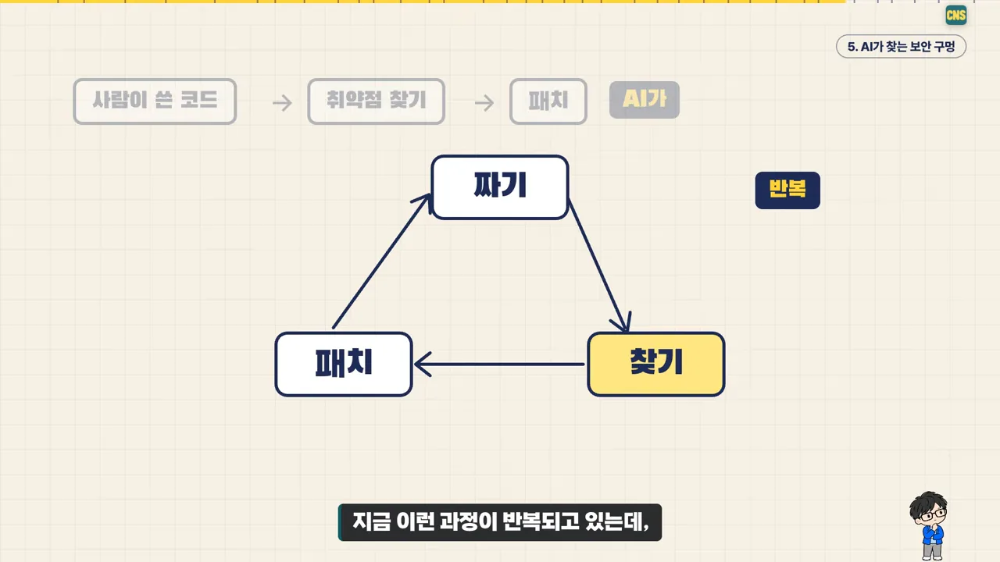
그 근거로 구글의 Carbon 이야기를 들어요. AI와 엔지니어가 같이 일하면서 모델 개발 속도가 크게 빨라졌다는 코멘트가 나온다는 거예요. 그래서 지금이 특이점 직전이 아닐까 생각한대요.
마지막 슬라이드는 '인간의 지능'을 점선으로 긋고, 노란 곡선이 가파르게 올라 그 선에 닿는 모습이에요. 제목은 '솔직히 무섭다'예요. AI가 사람의 통제를 넘어설까 걱정되고, 다음 달과 내년이 어떤 모습일지 모르겠다고 해요.
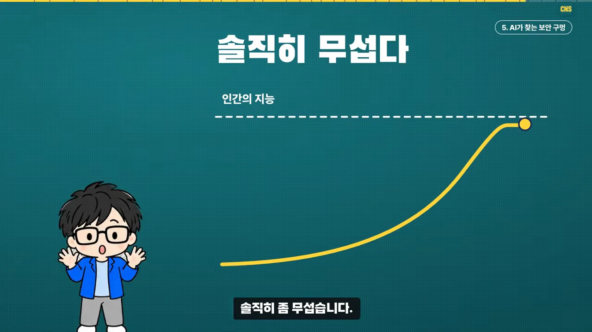
솔직히 좀 무섭습니다. AI 수준이 점점 올라가서, 인간의 통제를 넘어서지 않을까 걱정도 되고요.
— 영상 04:31